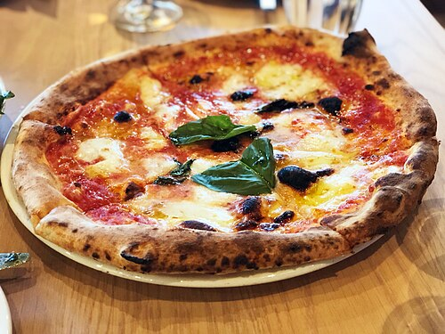

pizza

Descripción
La pizza es un plato italiano compuesto por una base de masa horneada, cubierta con salsa de tomate, queso y otros ingredientes al gusto. Existen incontables variantes según la región y los ingredientes utilizados, desde la clásica margherita hasta versiones con carnes, vegetales o embutidos.
Esta receta cubre la preparación de una pizza margherita casera, con masa desde cero.
Ingredientes
Para la masa
- 500 g de harina de fuerza
- 325 ml de agua tibia
- 7 g de levadura seca
- 2 cucharadas de aceite de oliva
- 1 cucharadita de sal
- 1 cucharadita de azúcar
Para la cobertura
- 200 ml de salsa de tomate
- 250 g de mozzarella fresca, en rodajas
- Hojas de albahaca fresca
- Aceite de oliva para terminar
- Sal y pimienta al gusto
Pasos
- Disolver la levadura y el azúcar en el agua tibia y dejar reposar 5 minutos hasta que se forme espuma.
- Mezclar la harina con la sal en un bol grande, hacer un hueco en el centro y verter el agua con la levadura y el aceite de oliva.
- Amasar durante unos 10 minutos hasta obtener una masa lisa y elástica. Dejar reposar tapada en un lugar cálido durante 1 hora, o hasta que duplique su tamaño.
- Precalentar el horno a la temperatura más alta posible, idealmente con una piedra o bandeja para pizza dentro.
- Dividir la masa en porciones y estirar cada una sobre una superficie enharinada hasta lograr el grosor deseado.
- Cubrir con la salsa de tomate, distribuir la mozzarella y agregar un chorrito de aceite de oliva.
- Hornear entre 8 y 12 minutos, hasta que los bordes estén dorados y el queso burbujee.
- Retirar del horno, agregar las hojas de albahaca fresca y sazonar con sal y pimienta antes de servir.
clic aqui para volver